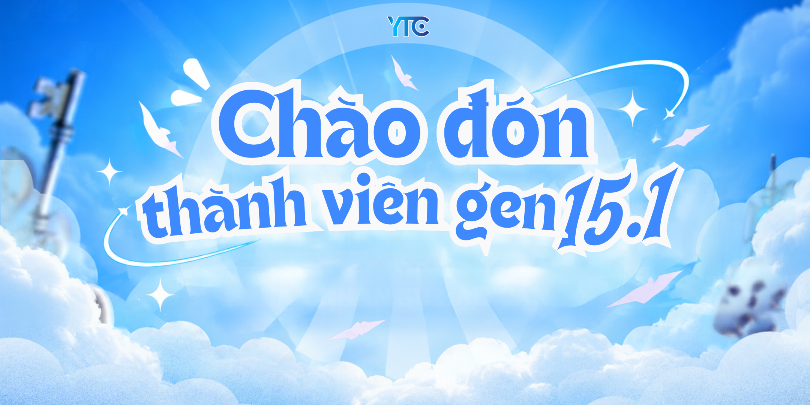
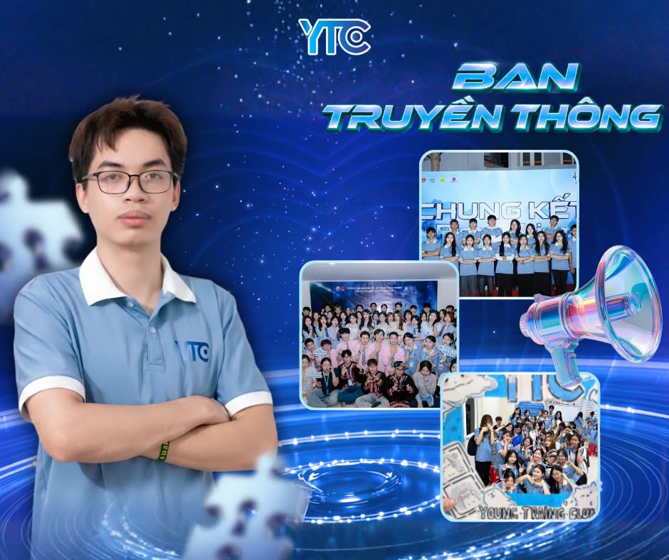

Nơi ươm mầm tài năng, phát triển kỹ năng mềm và gắn kết thanh xuân rực rỡ tại UNETI
Nơi bạn kết nối và hoà nhập!
Chúc mừng những gương mặt mới chính thức gia nhập Gen 15.1 của YTC!

» Ban Nhân sự - Hậu cần
» Ban MC - Lễ tân
» Ban Kỹ thuật - Vận hành
» Ban Truyền thông
Theo dõi các mốc thời gian quan trọng trong quá trình tuyển chọn thành viên mới của YTC.
Chính thức bắt đầu nhận hồ sơ ứng tuyển từ các bạn sinh viên quan tâm.
Hạn cuối nộp hồ sơ và gửi đầy đủ thông tin cần thiết cho đơn ứng tuyển.
Thành viên hội đồng tuyển chọn sẽ tiến hành phỏng vấn trực tiếp theo các khung giờ trên để đánh giá sự phù hợp.
Thông báo danh sách thành viên được tuyển chọn và chào đón các bạn gia nhập YTC.
Giải đáp nhanh những thắc mắc thường gặp của các bạn sinh viên trên hành trình ứng tuyển và trở thành YTC-er.
Tất cả sinh viên UNETI đều có thể ứng tuyển, không giới hạn năm học hay ngành đào tạo. Chỉ cần bạn có tinh thần học hỏi, mong muốn rèn luyện kỹ năng mềm và sẵn sàng đồng hành cùng các hoạt động của CLB.
Hoàn toàn không cần! YTC luôn chào đón các bạn bắt đầu từ con số 0. Sau khi trở thành thành viên chính thức, bạn sẽ được các anh chị đi trước và bạn bè cùng ban kèm cặp, hướng dẫn từ những điều cơ bản nhất.
Chỉ gồm 3 bước: điền đơn ứng tuyển online → tham gia phỏng vấn trực tiếp → nhận kết quả công bố trên Fanpage chính thức của CLB. Bạn có thể xem lại các mốc thời gian của đợt tuyển gần nhất ở mục "Timeline tuyển thành viên" phía trên.
Có! Khi điền đơn, bạn sẽ ghi nguyện vọng vào ban mình yêu thích. Buổi phỏng vấn cũng là dịp để hội đồng lắng nghe và tư vấn ban phù hợp nhất với tính cách, thế mạnh của từng bạn. Hãy tham khảo mục "Giới thiệu các Ban Chuyên Môn" bên dưới để chọn cho riêng mình một điểm đến ưng ý.
YTC thường mở đợt tuyển thành viên lớn vào đầu mỗi kỳ của năm học. Đợt tuyển gần nhất - "THE KEY IS YOU - Gen 15.1" - đã khép lại bằng buổi công bố thành viên mới. Hẹn gặp lại các bạn ở đợt đăng ký tiếp theo, nhớ theo dõi Fanpage của CLB để không bỏ lỡ thông tin mở đơn nhé!
Một môi trường rèn luyện kỹ năng mềm thực chiến (giao tiếp, làm việc nhóm, tổ chức sự kiện...), cơ hội trải nghiệm các vai trò cùng 4 Ban Chuyên Môn, những người bạn đồng hành trên khắp các khoa và vô vàn khoảnh khắc thanh xuân đáng nhớ trong quãng đời sinh viên.
Lựa chọn môi trường phù hợp với sở thích, thế mạnh và đam mê của bạn tại YTC
“Hậu phương vững chắc” giúp mọi hoạt động và sự kiện của CLB diễn ra thuận lợi, suôn sẻ nhất.
Gương mặt đại diện duyên dáng, năng động và chuyên nghiệp của CLB trong mọi chương trình.
Trụ cột công nghệ, đảm nhiệm toàn bộ khâu âm thanh, ánh sáng, thiết kế và media sự kiện.

Cầu nối lan tỏa hình ảnh, thông điệp và câu chuyện ý nghĩa của YTC đến toàn thể cộng đồng sinh viên.
Đợt tuyển "THE KEY IS YOU - Gen 15.1" đã khép lại với hàng loạt gương mặt mới rực rỡ. Hẹn gặp lại các bạn ở đợt đăng ký tiếp theo - hãy chuẩn bị sẵn sàng, vì chiếc chìa khóa tiếp theo rất có thể chính là bạn!
Theo dõi Fanpage của Young Training Club để cập nhật thông tin tuyển thành viên mới nhất!